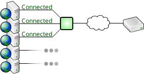

Throttling limits the number of connections to a given database and queues connection requests rather than denying them access outright. This can prevent database overload, maximize the value of a per-connection licensing scheme, and prevent an app from monopolizing the database
As the popularity of a web-baseed application grows, one day it may finally get enough traffic for a burst of activity to request more connections than the database can handle.
If the app wasn't written to manage that particular error, it may just fail.
When an application reaches this point, it's likely that the database has already been as well tuned as it can be. Since the app only gets busy enough to overload the database during bursts of activity, it would be ideal if the connection requests could be queued, rather than rejected.
SQL Relay can be configured to maintain a certain number of database connections and open more, on-demand, up to a point. If the app is so busy that it needs more connections than the maximum number configured, then connection requests will be queued.
Queued connection requests consume few system resources and may be configured to wait for a while before giving up, or wait indefinitely.
Throttling is especially useful when using a cloud-service database with a per-connection licensing scheme. SQL Relay can be configured to open the exact number of connections that you paid for and funnel all of your database traffic through them. If you paid for 50 connections, but every now and then you get a burst of traffic and your app requests 60 connections, then 10 of them will be queued, rather than rejected.

Multiple applications often use the same database. Under the right set of circumstances, a lower priority app can monopolize the database with a large number of sessions or with long-running queries. In some cases, this can be managed by dedicating a database user to each application and placing quotas on the users. But not all databases support user quotas, and applications must often share database users.
SQL Relay can be used to manage this problem. Multiple instances of SQL Relay can be created, each instance can be dedicated to a set of apps, and the instances dedicated to lower priority apps can be configured to maintain a limited number of database connections.
As a result, the number of simultaneous sessions that the lower priority apps are able to maintain are also limited.